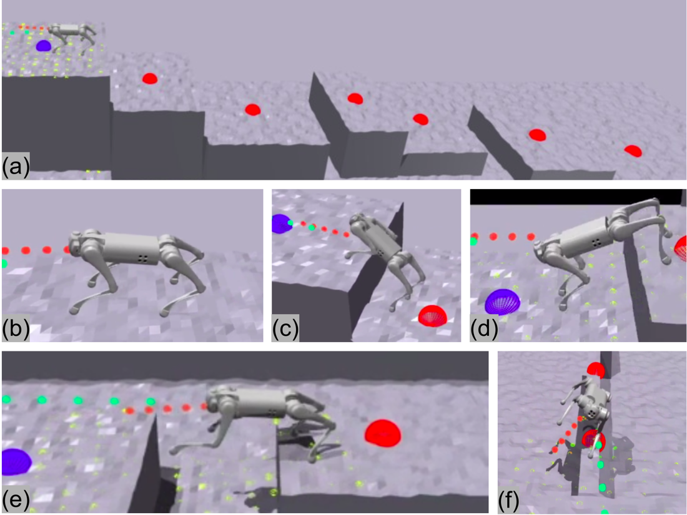
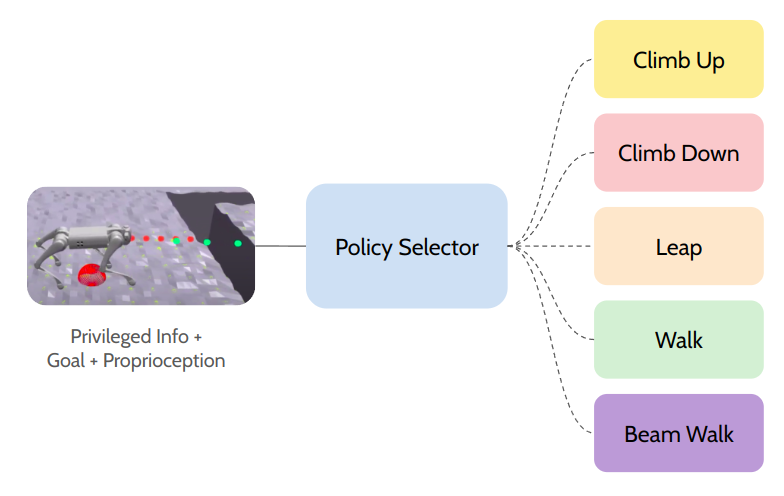

|
CMU 16-813 · Fall 2023
Breadth vs Depth🤖 Benchmarking Generalists and Specialists in Robot Learning This is my project within the course 16-813: Introduction to Robot Learning at Carnegie Mellon University in Fall 2023 semester.  Abstract. The motivation for our project stems from the growing interest and importance of agile robots in various fields, including entertainment, search and rescue operations, and everyday tasks. As robots become more integrated into human environments, their ability to navigate complex and dynamic environments becomes crucial. Understanding whether a generalist or specialist approach is more effective in robot agility has direct implications for real-world applications. For instance, a generalist robot may be more versatile in handling different types of terrain commonly found in various environments, while a specialist robot may excel in specific scenarios. Knowing which approach is more effective can guide the development of robots for specific tasks or environments. By addressing these motivations, our project can contribute valuable insights to the field of robotics and help advance athletic intelligence that enables navigating and interacting with complex environments effectively. Stay tuned for more updates! ApproachesOur research lays the foundation for a comprehensive benchmark in evaluating diverse learning-based approaches for robot agility. We introduce three distinct baselines: i) specialist policies that acquire individual skills through on-policy reinforcement learning; ii) a hierarchical structure featuring a policy/skill selector that learns to choose the appropriate behavior among these specialists; and iii) a true generalist policy that simultaneously learns to handle all tasks. Additionally, we explore the policy/skill selector's performance under two training paradigms: on-policy reinforcement learning and imitation learning based on an oracle policy. We seek to answer these questions:
 |